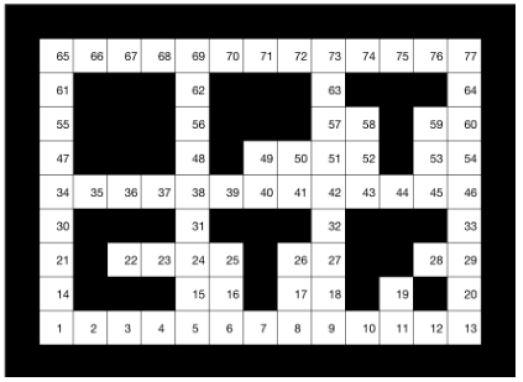
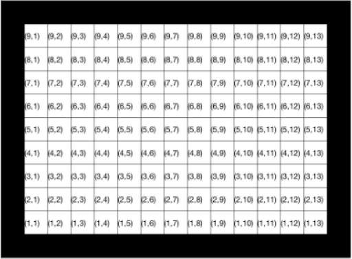

from IPython.display import clear_output
import numpy as np
import matplotlib.pyplot as plt
import matplotlib.patches as patches
import matplotlib as mpl
import scipy.sparse as sp
import random
%matplotlib inlinePosition Estimation in a Grid World Using the Bayes Filter
This live script illustrates the use of the Bayes’ filter for estimating the position of an agent. The agent navigates in a grid world with 77 positions, where it will be visible, but also throught addional 40 obstacle positions where it will be invisible. The environment is shown in the figure below. The agent can only move to an adjacent cell (left, right, up down, while diagonal moves are not allowed) at each time step/iteration \(k \in \{1, 2, \ldots\}\) or stay in the same cell. The agent can only not navigate through the walls, e.g., at position 62 it can move up, down, left and right, but at position 5 it can only move up, right and left.

Assume that at every time step the agent has the same probability of staying in the same position as that of moving to any other feasible position (not a wall). If at a given position the agent is visible, a measurement at time \(k\) is available:
\[y_{k}=p_{k}=\left[\begin{array}{ll}x_{k} & z_{k}\end{array}\right]\]
where \(x_{k} \in\{1, \ldots, 9\}\) is the x coordinate and \(z_{k} \in\{1, \ldots, 13\}\) is the z coordinate at time k, as presented in the figure below. If the agent is hidden behind one of the obstacles, no measurement is received and this is indicated by
\[y=\left[\begin{array}{ll}-1 & -1\end{array}\right].\]

Let \(M_{k} \in \mathbb{R}^{9 \times 13}\) be a matrix at time step k with entries
\[\left[M_{k}\right]_{i j}=\text{Prob}\left[p_{k}=[i \quad j] | y_{0}, \ldots, y_{k}\right]\]
This live script provides \(\left[M_{k}\right]_{i j}\) given \(\left[M_{k-1}\right]_{i j}\) and \(y_{k}\), where without loss of generality it can be assumed that \(k=1\).
The Matlab function estimatepacmanpos below, computes as \(\left[M_{k}\right]_{i
j}\) given the input \(\left[M_{k-1}\right]_{i j}\) and the measurent, and its use can be illustrated by running the following instruction
The next function returns a binary matrix with the same dimension of the matrix States with ones at positions where States if infinity and zeros in the other positions.
def getMask():
nx = 9
nz = 13
M = np.zeros((nx,nz))
States = [[ 1, 2,3,4, 5, 6, 7, 8, 9, 10, 11, 12, 13],
[14, np.Inf, np.Inf, np.Inf, 15, 16, np.Inf, 17, 18, np.Inf, 19, np.Inf, 20],
[21, np.Inf, 22, 23,24,25, np.Inf, 26, 27, np.Inf, np.Inf, 28, 29],
[30, np.Inf, np.Inf, np.Inf, 31, np.Inf, np.Inf, np.Inf, 32, np.Inf, np.Inf, np.Inf, 33],
[34, 35, 36, 37,38,39, 40, 41, 42, 43, 44, 45, 46],
[47, np.Inf, np.Inf, np.Inf, 48, np.Inf, 49, 50, 51, 52, np.Inf, 53, 54],
[55, np.Inf, np.Inf, np.Inf, 56, np.Inf, np.Inf, np.Inf, 57, 58, np.Inf, 59, 60],
[61, np.Inf, np.Inf, np.Inf, 62, np.Inf, np.Inf, np.Inf, 63, np.Inf, np.Inf, np.Inf, 64],
[65, 66, 67, 68,69,70, 71, 72, 73, 74, 75, 76, 77]]
M[np.array(States)==np.Inf] = 1
return Mdef estimatepacmanpos(Mcurrent, y, P, Mask):
nx = 9
nz = 13
# Obtain P matrix
if np.linalg.norm(np.array(y) - np.array([[-1], [-1]])) == 0: # no measure
Mnextvec_ = Mask[:].reshape(117,1)*[P * Mcurrent.reshape(117,1)]
if np.sum(Mnextvec_) == 0:
print('here')
Mnextvec_ = Mnextvec_/np.sum(Mnextvec_)
Mnext = Mnextvec_.reshape(nx,nz)
else:
Mnext = np.zeros((nx,nz))
Mnext[y[0][0],y[1][0]] = 1
return P, Mask, MnextThe next function determines the probability transition matrix of the Markov process which is needed for the Bayes filter.
def getP():
nx = 9
nz = 13
P = sp.csr_matrix(np.zeros((nx*nz,nx*nz)))
ind = 0
for indz in range(nz):
for indx in range(nx):
jP = xz2ind(indx,indz,nz)
if indz == 0:
if indx == 0:
P[xz2ind(indx,indz,nz),jP] = 1/3
P[xz2ind(indx+1,indz,nz),jP] = 1/3
P[xz2ind(indx,indz+1,nz),jP] = 1/3
else:
if indx == nx-1:
P[xz2ind(indx,indz,nz),jP] = 1/3
P[xz2ind(indx-1,indz,nz),jP] = 1/3
P[xz2ind(indx,indz+1,nz),jP] = 1/3
else:
P[xz2ind(indx,indz,nz),jP] = 1/4
P[xz2ind(indx-1,indz,nz),jP] = 1/4
P[xz2ind(indx,indz+1,nz),jP] = 1/4
P[xz2ind(indx+1,indz,nz),jP] = 1/4
else:
if indz == nz-1:
if indx == 0:
P[xz2ind(indx,indz,nz),jP] = 1/3
P[xz2ind(indx+1,indz,nz),jP] = 1/3
P[xz2ind(indx,indz-1,nz),jP] = 1/3
else:
if indx == nx-1:
P[xz2ind(indx,indz,nz),jP] = 1/3
P[xz2ind(indx-1,indz,nz),jP] = 1/3
P[xz2ind(indx,indz-1,nz),jP] = 1/3
else:
P[xz2ind(indx,indz,nz),jP] = 1/4
P[xz2ind(indx-1,indz,nz),jP] = 1/4
P[xz2ind(indx,indz-1,nz),jP] = 1/4
P[xz2ind(indx+1,indz,nz),jP] = 1/4
else:
if indx == 0:
P[xz2ind(indx,indz,nz),jP] = 1/4
P[xz2ind(indx+1,indz,nz),jP] = 1/4
P[xz2ind(indx,indz-1,nz),jP] = 1/4
P[xz2ind(indx,indz+1,nz),jP] = 1/4
else:
if indx == nx-1:
P[xz2ind(indx,indz,nz),jP] = 1/4
P[xz2ind(indx-1,indz,nz),jP] = 1/4
P[xz2ind(indx,indz-1,nz),jP] = 1/4
P[xz2ind(indx,indz+1,nz),jP] = 1/4
else:
P[xz2ind(indx,indz,nz),jP] = 1/5
P[xz2ind(indx-1,indz,nz),jP] = 1/5
P[xz2ind(indx,indz-1,nz),jP] = 1/5
P[xz2ind(indx+1,indz,nz),jP] = 1/5
P[xz2ind(indx,indz+1,nz),jP] = 1/5
return PThe next function provides the coordinates of each cell labeled with a number different from infinity, given the States matrix. Each row i of M contains the (x,y) coordinates.
def States2Pos(States):
n1,n2 = States.shape
vec1 = range(n1)
vec2 = range(n2)
L = max(States(States!=np.Inf))
M = np.zeros((L,2))
for i in range(L):
M[i,1:2] = [vec1[logical(sum(States == i,2))], vec2(logical(sum(States == i,1)))]
return MThe next two function definte the transformation between x, z coordinates to a unique number and the inverse transformation.
def xz2ind(x, z, nz):
ind = z + x * nz
return ind
def ind2xz(ind, nz):
z = ind % nz
x = int(np.floor(ind/nz))
xz = [[x],[z]]
return xzdef plotrectangle(l, r, ll, lr, c, ax):
rect = patches.Rectangle((l, r), ll, lr, facecolor=c)
ax.add_patch(rect)
def plotsquare(l, r, c, ax):
rect = patches.Rectangle((l, r), 1, 1, facecolor=c, edgecolor='k')
ax.add_patch(rect)The next function draw the background (entry with infinity means obstacle), given a matrix with states corresponding to each entry (i,j).
def drawbackground(ax):
ax.set_xlim(-2, 16)
ax.set_ylim(-2, 12)
plotrectangle(-0.5, -0.5, 1, 10, [0, 0, 0], ax)
plotrectangle(13.5, -0.5, 1, 10, [0, 0, 0], ax)
plotrectangle(-0.5, -0.5, 14, 1, [0, 0, 0], ax)
plotrectangle(-0.5, 9.5, 15, 1, [0, 0, 0], ax)
for i in range(9):
for j in range(13):
plotsquare(j + 0.5, i + 0.5, [1,1,1], ax)
plotrectangle(-0.5, -0.5, 1, 10,[0, 0, 0], ax)
plotrectangle(13.5,-0.5,1,10,[0, 0, 0], ax)
plotrectangle(-0.5,-0.5,14,1,[0, 0, 0], ax)
plotrectangle(-0.5,9.5,15,1,[0, 0, 0], ax)
#O
plotrectangle(1.5,5.5,3,3,[0, 0, 0], ax)
#P
plotrectangle(5.5,5.5,1,3,[0, 0, 0], ax)
plotrectangle(7.5,6.5,1,2,[0, 0, 0], ax)
plotrectangle(6.5,6.5,1,2,[0, 0, 0], ax)
#T top
plotrectangle(10.5,5.5,1,3,[0, 0, 0], ax)
plotrectangle(9.5,7.5,1,1,[0, 0, 0], ax)
plotrectangle(11.5,7.5,1,1,[0, 0, 0], ax)
#C
plotrectangle(1.5,1.5,1,3,[0, 0, 0], ax)
#plotrectangle(3.5,1.5,1,3,[0, 0, 0], ax)
plotrectangle(2.5,1.5,2,1,[0, 0, 0], ax)
plotrectangle(2.5,3.5,2,1,[0, 0, 0], ax)
#T bottom
plotrectangle(6.5,1.5,1,3,[0, 0, 0], ax)
plotrectangle(5.5,3.5,1,1,[0, 0, 0], ax)
plotrectangle(7.5,3.5,1,1,[0, 0, 0], ax)
#R
plotrectangle(9.5,1.5,1,3,[0, 0, 0], ax)
plotrectangle(10.5,2.5,1,2,[0, 0, 0], ax)
plotrectangle(11.5,1.5,1,1,[0, 0, 0], ax)
plotrectangle(11.5,3.5,1,1,[0, 0, 0], ax)
def drawPacMan(x,y,ax):
posxy = np.column_stack([[-0.4, -0.4, 0.4, 0, 0.4],[-0.4, 0.4, 0.4, 0, -0.4]]) + np.array([x,y])
pacman = patches.Polygon(posxy, closed=True, facecolor='y')
ax.add_patch(pacman)def live_plot(p,nx,nz,Mnext,States,k):
f, ax1 = plt.subplots(1, 2, figsize=(9, 3), sharey=True)
clear_output(wait=True)
drawbackground(ax1[0])
drawbackground(ax1[1])
# update first plot
if States[p[0][k]][p[1][k]]==np.Inf: # not visible
plotsquare(-0.5,-0.5,[0, 0, 0],ax1[0])
else: # visible
drawPacMan(p[1][k]+1,p[0][k]+1,ax1[0])
# update second plot
for i in range(nx):
for j in range(nz):
plotsquare( j+0.5, i+0.5, (1-Mnext[i,j])*np.array([1, 1, 1]), ax1[1])
drawPacMan(p[1][k]+1,p[0][k]+1,ax1[1])
ax1[0].set_xlim(-1, 16)
ax1[0].set_ylim(-1, 12)
ax1[1].set_xlim(-1, 16)
ax1[1].set_ylim(-1, 12)
plt.pause(0.2)
plt.show()
This is the function that provides the animation
def animationBayes():
States = [[ 1, 2, 3, 4, 5, 6, 7, 8, 9, 10, 11, 12, 13],
[14, np.Inf, np.Inf, np.Inf, 15, 16, np.Inf, 17, 18, np.Inf, 19, np.Inf, 20],
[21, np.Inf, 22, 23, 24, 25, np.Inf, 26, 27, np.Inf, np.Inf, 28, 29],
[30, np.Inf, np.Inf, np.Inf, 31, np.Inf, np.Inf, np.Inf, 32, np.Inf, np.Inf, np.Inf, 33],
[34, 35, 36, 37, 38, 39, 40, 41, 42, 43, 44, 45, 46],
[47, np.Inf, np.Inf, np.Inf, 48, np.Inf, 49, 50, 51, 52, np.Inf, 53, 54],
[55, np.Inf, np.Inf, np.Inf, 56, np.Inf, np.Inf, np.Inf, 57, 58, np.Inf, 59, 60],
[61, np.Inf, np.Inf, np.Inf, 62, np.Inf, np.Inf, np.Inf, 63, np.Inf, np.Inf, np.Inf, 64],
[65, 66, 67, 68, 69, 70, 71, 72, 73, 74, 75, 76, 77]]
p0 = [[5], [11]] # initial position of agent, must be a visible position
nx = 9 # grid world dimensions
nz = 13
P = getP() # P transition probability matrix for Bayes' filter
Mask = getMask()
p = p0
h = 8
k = 0 #1
indm = 1
Mnext = np.zeros((nx,nz)) # initial estimate of probability
Mnext[p0[0][0],p0[1][0]] = 1
while True: # iterate the position of the agent and estimate it with Bayes filter
Mcurrent = Mnext
if States[p[0][0]][p[1][0]]== np.Inf:
y = [[-1], [-1]]
else:
y = p
P, Mask, Mnext = estimatepacmanpos(Mcurrent, y, P, Mask)
indnext = P[:,xz2ind(p[0][0], p[1][0], nz)] != 0
nnext = indnext.count_nonzero()
indsel = random.randint(0, nnext-1)
live_plot(p,nx,nz,Mnext,States,k)
if indm > 10:
break
p = ind2xz(indnext.nonzero()[0][indsel], nz)
indm += 1animationBayes()This animation shows two subplots one with the environment and visible or invisible agent, another one with an illustration of the probability distribution of the estimated position provided by the Bayes’ filter and the actual position of the agent.